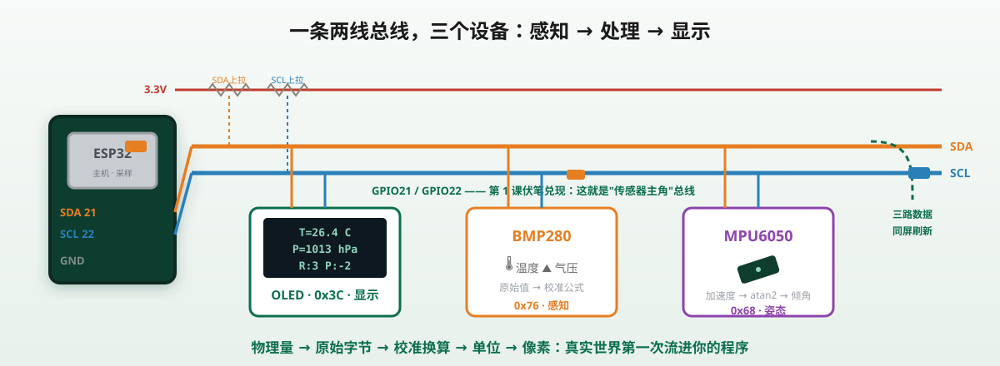

阶段三 · 通信 ｜ 难度：★★★★☆ ｜ 预计用时：50–60 分钟
本课材料：ESP32 开发板 ×1、USB 线 ×1、面包板、0.96 寸 OLED（SSD1306）×1、BMP280 气压传感器 ×1、MPU6050 姿态传感器 ×1、杜邦线若干 无硬件替代：Wokwi 添加
BMP280与MPU6050元件（或wokwi-bmp280、wokwi-mpu6050），接同一条 I2C 总线

你将做出：一条两线总线上同时挂着 3 个设备——OLED 显示屏 + 气压计 + 姿态传感器。屏幕每秒刷新真实温度、气压换算的海拔、以及你手里板子倾斜时实时跳动的姿态角。
第 7 课的 OLED 只会显示你写死的字。这一课，屏幕上的数字第一次来自真实世界——传感器进、屏幕出，一条 I2C 总线承载三个设备全靠地址区分。这是本系列第一课"完整的感知系统"。
本课学习目标（完成后你将拥有）：
第 7 课结束时，你的总线上只有一个 OLED。现在往同一条总线上再并联两个传感器——不加线、不换引脚，只是把它们的 SDA/SCL 接到同两根母线上：
3.3V ──┬──[上拉]──┬──[上拉]──┬──[上拉]──┐
│ │ │ │
SDA ════════╪══════════╪══════════╪══ ← 同一根数据线
SCL ════════╪══════════╪══════════╪══ ← 同一根时钟线
│ │ │ │
┌──┴──┐ ┌───┴───┐ ┌───┴───┐ ┌───┴───┐
│OLED │ │BMP280 │ │MPU6050│ │ (还能再挂…)│
│0x3C │ │ 0x76 │ │ 0x68 │ │ 0x03-0x77 │
└─────┘ └───────┘ └───────┘ └───────────┘
这正是 I2C 的威力：第 7 课学的"寻址"不是理论——现在总线上 3 个设备，主机每发一帧数据都带地址，只有地址对上的设备接管数据线。OLED 收到 0x3C 的话，BMP280 和 MPU6050 当没听见。
📌 接线表（全课唯一一次接线，之后不再动）
设备 VCC GND SDA SCL OLED 3V3 GND GPIO21 GPIO22 BMP280 3V3 GND GPIO21 GPIO22 MPU6050 3V3 GND GPIO21 GPIO22 三个设备的 SDA 全接 21、SCL 全接 22——并联，不是串联。面包板上两根母线横着走，每个模块的四根线往母线上搭即可。
⚠️ 第 1 课引脚图伏笔正式兑现：
IO21 = I2C SDA（第 8 课传感器主角）——从这课起，21/22 就是你的"传感器专用总线"，直到第 11 课开 Wi-Fi 也不用换（I2C 与 Wi-Fi 不冲突，只有模拟输入才有 ADC2 问题——第 6 课清算过）。
所有 I2C 传感器的读取流程都是同一个模子：
① beginTransmission(地址) 点名
② write(寄存器地址) 说"我要看第 X 号抽屉"
③ endTransmission(false) 不释放总线（Repeated Start）
④ requestFrom(地址, 字节数) 说"把数据递给我"
⑤ read() × N 一个字节一个字节收
⑥ 拼装 + 换算 原始字节 → 有物理意义的数
"寄存器（Register）"是本课第一个新概念：传感器内部有一排小抽屉，每个抽屉有编号，存着一份数据或一条命令。读传感器 = 按编号开抽屉拿东西。比如 BMP280 的温度数据存在 0xFA–0xFC 三个抽屉里（3 个字节）。
读之前先做一次"点名体检"——第 7 课的扫描逻辑直接复用：
bool deviceOnline(byte addr) {
Wire.beginTransmission(addr);
return Wire.endTransmission() == 0; // 0 = ACK = 在线
}
这是工程习惯：接线可能松、设备可能坏——每次读数前确认对方还活着，读到异常数据才有排查方向（第 7 课挑战里你断过 SDA，知道总线瘫了是什么样）。
BMP280 给你的不是温度，是一串原始整数。从原始值到摄氏度要走三步：
原始值(16~20位整数) → 补偿公式(用出厂校准系数) → 浮点摄氏度
为什么要校准系数？ 每颗芯片在出厂时都会有微小差异，厂商把差异的补偿参数烧录在传感器自己的"校准抽屉"里（0x88–0xA1 共 26 字节）。读出这些参数，代入数据手册的公式，才能得到准确值。
💡 为什么不直接
温度 = 原始值 × 系数？ 因为传感器的响应不是完美直线——出厂时用高精度设备测了几个点，把修正曲线的参数存进去。"读校准数据 → 代入公式"是所有传感器的通用套路，第 8 课先见识，等你用 DHT11、SHT30 时会发现大家都一样。懒人方案：Adafruit 库已经把公式封装好了——
readTemperature()直接给你摄氏度。本课代码用库，但你要知道库底下在干什么（上面这段就是）。
气压 → 海拔：大气压随高度递减，用简化的气压高度公式：
海拔 ≈ 44330 × (1 - (当前气压/1013.25)^0.1903) （单位：米）
1013.25 hPa 是海平面标准气压。你的板子从桌面拿到窗台，气压差能换算出几十厘米的高度变化——本课挑战里你会亲手验证。
MPU6050 是六轴姿态传感器（三轴加速度 + 三轴陀螺仪）。本课先用加速度计算倾角：
原理：静止时，加速度计测到的唯一加速度是重力（1g）。板子一倾斜，重力分量就分配到三个轴上——从各轴分量的三角函数就能反推倾角。
Z轴
↑ · 板子倾斜 θ
│ /
│ / 重力 1g 始终竖直向下
│/
└──── X轴
θx = atan2( Ay, Az ) ← Y/Z 分量求反正切
θy = atan2( -Ax, sqrt(Ay² + Az²) )
原始加速度值的含义：MPU6050 默认量程 ±2g，16 位分辨率——16384 个 LSB = 1g。所以：
真实加速度(g) = 原始值 / 16384
单位换算是传感器课的第二母题（第一是校准）：永远问自己"这个数字的单位是什么？"——原始值、g、m/s²、摄氏度、hPa，差一个单位结论就全错。
⚠️ 数据拼装的坑：MPU6050 的每个数据是两个字节（高字节在前，大端序）。
Ax = (高<<8) | 低——位移和或运算是嵌入式的"拼积木"，第 9 课讲 SPI 数据帧时还会用到。忘了拼、拼反了，读出来的就是雪花点般的乱数。
// ============================================
// 第 8 课：I2C 传感器实战 —— 温度/气压/姿态上屏
// ============================================
#include <Wire.h>
#include <Adafruit_GFX.h>
#include <Adafruit_SSD1306.h>
#include <Adafruit_BMP280.h> // 气压传感器库
#include <Adafruit_MPU6050.h> // 姿态传感器库
const int SDA_PIN = 21; // I2C SDA（第 1 课伏笔，本课主角）
const int SCL_PIN = 22;
#define OLED_ADDR 0x3C
#define MPU_ADDR 0x68
Adafruit_SSD1306 display(128, 64, &Wire, -1);
Adafruit_BMP280 bmp;
Adafruit_MPU6050 mpu;
unsigned long lastUpdate = 0;
void setup() {
Serial.begin(115200);
Wire.begin(SDA_PIN, SCL_PIN);
// —— 三个设备逐一体检（第 7 课扫描逻辑复用）——
checkDevice(0x3C, "OLED");
checkDevice(0x76, "BMP280");
checkDevice(MPU_ADDR, "MPU6050");
// —— 初始化 ——
display.begin(SSD1306_SWITCHCAPVCC, OLED_ADDR);
display.clearDisplay();
if (!bmp.begin(0x76)) { // BMP280 地址 0x76（有的板是 0x77）
Serial.println("BMP280 未找到！");
while (true) delay(1000);
}
if (!mpu.begin(MPU_ADDR)) {
Serial.println("MPU6050 未找到！");
while (true) delay(1000);
}
mpu.setAccelerometerRange(MPU6050_RANGE_2_G); // ±2g：16384 LSB = 1g
mpu.setGyroRange(MPU6050_RANGE_250_DEG);
Serial.println("三设备就绪，开始采样");
}
void checkDevice(byte addr, const char* name) {
Wire.beginTransmission(addr);
byte err = Wire.endTransmission();
Serial.print(name); Serial.print(" (0x");
Serial.print(addr, HEX); Serial.print("): ");
Serial.println(err == 0 ? "在线 ✓" : "离线 ✗ 检查接线！");
}
void loop() {
if (millis() - lastUpdate >= 500) { // 每 500ms 采样刷新
lastUpdate = millis();
// —— 读 BMP280（库已封装校准换算）——
float tempC = bmp.readTemperature(); // 摄氏度
float hPa = bmp.readPressure() / 100.0; // 帕斯卡 → 百帕
float altM = 44330.0 * (1.0 - pow(hPa / 1013.25, 0.1903));
// —— 读 MPU6050，原始值 → 倾角 ——
sensors_event_t a, g, temp;
mpu.getEvent(&a, &g, &temp);
float ax = a.acceleration.x; // 单位已是 m/s²（库换算过）
float ay = a.acceleration.y;
float az = a.acceleration.z;
float roll = atan2(ay, az) * 180.0 / PI; // 横滚角
float pitch = atan2(-ax, sqrt(ay*ay + az*az)) * 180.0 / PI; // 俯仰角
// —— 串口原始输出 ——
Serial.print("温度: "); Serial.print(tempC, 1);
Serial.print(" C 气压: "); Serial.print(hPa, 1);
Serial.print(" hPa 海拔: "); Serial.print(altM, 1);
Serial.print(" m 横滚: "); Serial.print(roll, 0);
Serial.print(" 俯仰: "); Serial.println(pitch, 0);
// —— OLED 局部刷新（第 7 课机制）——
display.fillRect(0, 0, 128, 64, SSD1306_BLACK);
display.setTextSize(1);
display.setCursor(0, 0);
display.print("T="); display.print(tempC, 1); display.println(" C");
display.print("P="); display.print(hPa, 1); display.println(" hPa");
display.print("Alt="); display.print(altM, 0); display.println(" m");
display.drawLine(0, 44, 127, 44, SSD1306_WHITE);
display.setCursor(0, 50);
display.print("R:"); display.print(roll, 0);
display.print(" P:"); display.print(pitch, 0);
display.print(" deg");
display.display();
}
}
checkDevice()——三个设备逐一体检
开机先把三个地址全点名一遍，串口直接告诉你谁在线谁离线。排错从"开机自检"开始——比"屏幕不亮再瞎猜"高效十倍。这段是你以后每个 I2C 项目的模板开头。
bmp.begin(0x76)——地址从哪来？
不是猜的——是第 7 课扫描出来的（或者传感器数据手册）。BMP280 有 0x76/0x77 两个可能（SDO 引脚决定），扫到哪个用哪个。地址永远以扫描结果为准，这是第 7 课教的铁律。
readPressure() / 100.0——单位换算的现场
库返回帕斯卡（Pa），而气象习惯用百帕（hPa）——差 100 倍。单位换算必须显式写在代码里，并加注释（// 帕 → 百帕），三个月后回看才不会懵。
atan2(ay, az) * 180.0 / PI——弧度转角度
atan2 返回弧度，人眼看的角度是度——×180/π。库给的中间量不一定是你想要的单位，又一个"单位意识"的现场。
sensors_event_t——库的数据结构
Adafruit 库统一用结构体返回数据（x/y/z 三轴 + 温度一起给）。结构体 = 打包的多个变量，第 14 课 ESP-IDF 里你会更深入地认识它。
display.fillRect(0, 0, 128, 64, BLACK) 整屏清 + 重画
本课数据每 500ms 全部变化，局部刷新没有意义，整屏重画更简洁。第 7 课用 fillRect 局部清是因为只有计数在变——选哪种刷新方式，看变化的范围。
重点看第 ②③ 环：传感器给你的从来不是"温度"，而是原始整数——校准与换算是每个传感器驱动的隐藏工作（Adafruit 库替你做了，但你要知道它存在）。
上图是本课的完整数据链：物理量 → 传感器感知 → 原始字节 → 校准/换算 → 物理单位 → 屏幕像素。每一环都可能出错，串口打印就是为了让你能在中间任何一环截断排查。
Adafruit SSD1306、Adafruit BMP280、Adafruit MPU6050OLED/BMP280/MPU6050 三个都显示"在线 ✓"全部打勾 → 你完成了本系列第一个"感知系统"：真实世界的物理量进入了你的程序并显示出来。进入第 9 课。
drawCircle + 偏移坐标）。bmp.begin(0x76) 改成 0x77 重试——用第 7 课的扫描器确认真实地址，把结果记进笔记。for 循环，把 MPU6050 静止时的原始 ax 连续采 20 次打印出来——记录数值抖动的幅度。这是"传感器噪声"的第一手证据，第 10 课讲 millis 采样节奏时、第 11 课讲软件滤波时，我们都会回来引用它。| 现象 / 报错关键词 | 原因 | 解决办法 |
|---|---|---|
| 自检三个全"离线" | ① SDA/SCL 接反 ② 没共地 ③ 总线没上拉 | 对调 21/22；查 GND；确认模块自带上拉或外加 10kΩ |
| 只有部分设备离线 | 该设备接线松 / 地址不对 | 单独跑第 7 课扫描器确认地址；插紧杜邦线 |
BMP280 未找到 |
地址是 0x77 不是 0x76 | 扫描确认后改 begin() 参数 |
MPU6050 未找到 |
地址 0x68/0x69 之一 | 扫描确认；AD0 接 GND=0x68、接 VCC=0x69 |
| 温度读数离谱（-40 或 127） | 读取失败的错误码被当数据 | 检查接线；库的 readTemperature() 返回 NAN 时打印判断 |
| 倾角数字乱飞不归零 | ① 板子在振动 ② 没静止就读 ③ 量程配错 | 静置读数；确认 setAccelerometerRange(±2g) |
| 倾角恒为 0 不动 | 读的是陀螺仪不是加速度计 / 事件没刷新 | 确认用 a.acceleration.*；确认 getEvent 每次都调 |
| OLED 有字但传感器区空白 | 数据是 NaN，print 输出空 |
打印原始值排查；多半是 begin 失败但没判断 |
| 三个设备互相干扰、数据错乱 | 某设备时钟拉伸过长 / 上拉太弱 | 换 4.7kΩ 上拉；短线；逐个断开定位问题设备 |
| 开 Wi-Fi 后（未来课程）数据异常 | 不是 I2C 的问题——I2C 与 Wi-Fi 不冲突 | 第 6 课：那是 ADC2 的坑，I2C 引脚不受影响 |
你已经让"感知"（传感器）和"显示"（OLED）在一条总线上共存。但 I2C 的 400kHz 就像乡间小路——当你想刷一块彩色 TFT 屏幕、每秒推几百万像素时，它就堵死了。第 9 课：SPI 高速通信——四根线的"高速公路"（MOSI/MISO/SCK/CS），全双工、几 MHz 起步，你会接一块 TFT 彩屏并亲手对比 SPI 与 I2C 的速率差距（同一个动画里看两条路跑车）。同时你会第一次遇到"片选（CS）"这种新的设备区分方式——I2C 用地址点名，SPI 用独立线喊人。
本课程系列：从点亮一盏灯，到设计一台会自己思考的机器。